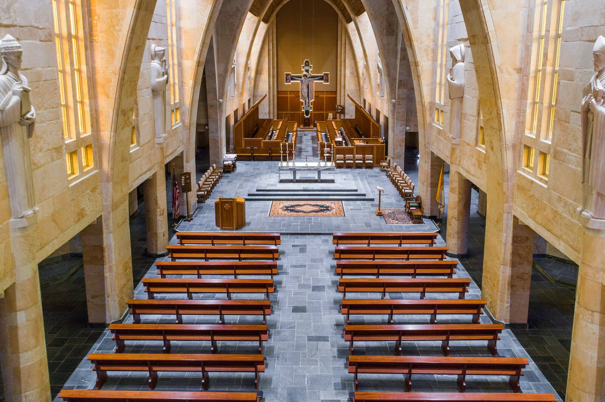
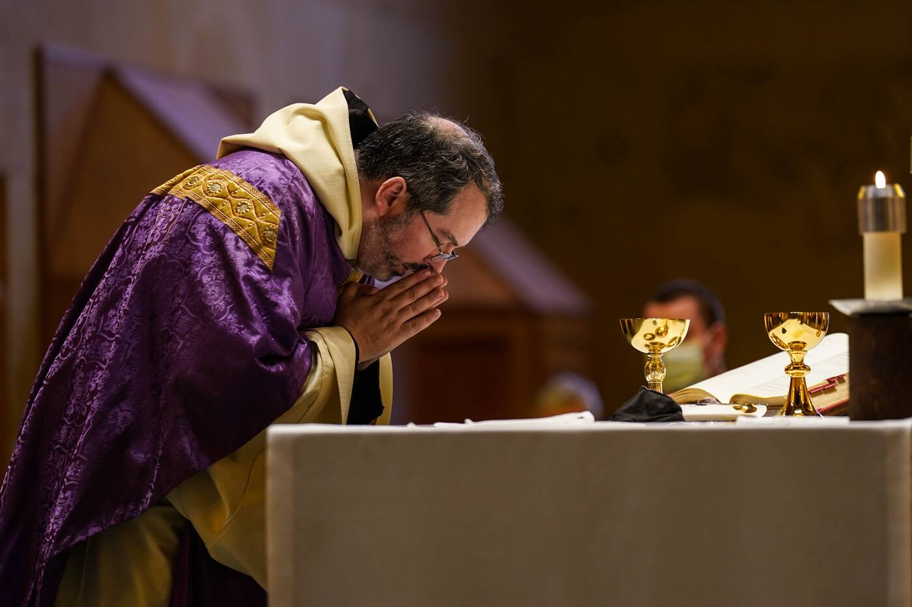

Come and pray
Times and visiting
The abbey church, Saint Bernard Abbey · © Saint Bernard Abbey
Almost every prayer time in the abbey church is open to the public. You don't need to call ahead or sign up. Just come in.
“He who sings prays twice.”
Prayer times
Confirm: Compline 7:10 (Br. Augustine) or 7:15 (abbey website)? Weekend Sext and Mass times come from the abbey website.Monday to Friday
| Time | Prayer |
|---|---|
| 6:00 am | Matins and LaudsNight prayer of psalms and readings, then morning praise |
| 11:55 am | SextMidday prayer |
| 5:00 pm | Mass |
| 5:30 pm | VespersEvening prayer |
| 7:10 pm | ComplineNight prayer before sleepNot open to the public on Wednesdays |
Saturday
| Time | Prayer |
|---|---|
| 6:00 am | Matins and Lauds |
| 10:45 am | Sext |
| 11:00 am | Mass |
| 5:30 pm | Vespers |
| 7:10 pm | Compline |
Sunday
| Time | Prayer |
|---|---|
| 7:00 am | Matins and Lauds |
| 10:00 am | Sext |
| 10:30 am | Mass |
| 5:30 pm | Solemn Vespers |
| — | ComplineNot open to the public on Sundays |
What to expect
- Where to sit. Visitors sit in the pews. (Oblates of the abbey may pray in choir with the monks. About oblates)
- Your phone. Please silence it.
- Singing. Sing along, or simply listen and pray.Decide: may guests sing along?
- Standing and sitting. You don't need to know when. Do what feels natural, or follow the people around you.
- What you'll hear. Mostly psalms, sung back and forth between two chanters and the whole community. Also hymns, short Bible readings, and prayers for the world. Lauds has the Canticle of Zechariah; Vespers has Mary's song, the Magnificat; and Compline ends with a short song in honor of Mary.
- Coming to Mass? Everyone is welcome. If you're not Catholic, you may come forward at Communion with your arms crossed over your chest for a blessing, or stay in your pew and pray.Confirm: the arms-crossed sign is the custom at the abbey
- Stay as long as you like. Come for one prayer time, or come back for many. Nothing to sign, nothing to join.

Want to follow along in the book? Here's how.
Finding us
Saint Bernard Abbey
1600 St. Bernard Drive SE
Cullman, Alabama 35055
Monastery phone: 256-734-8291
Address and phone number from the abbey's website.